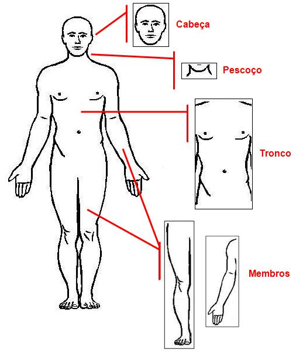
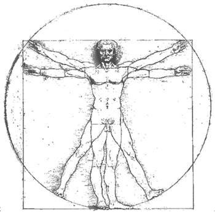
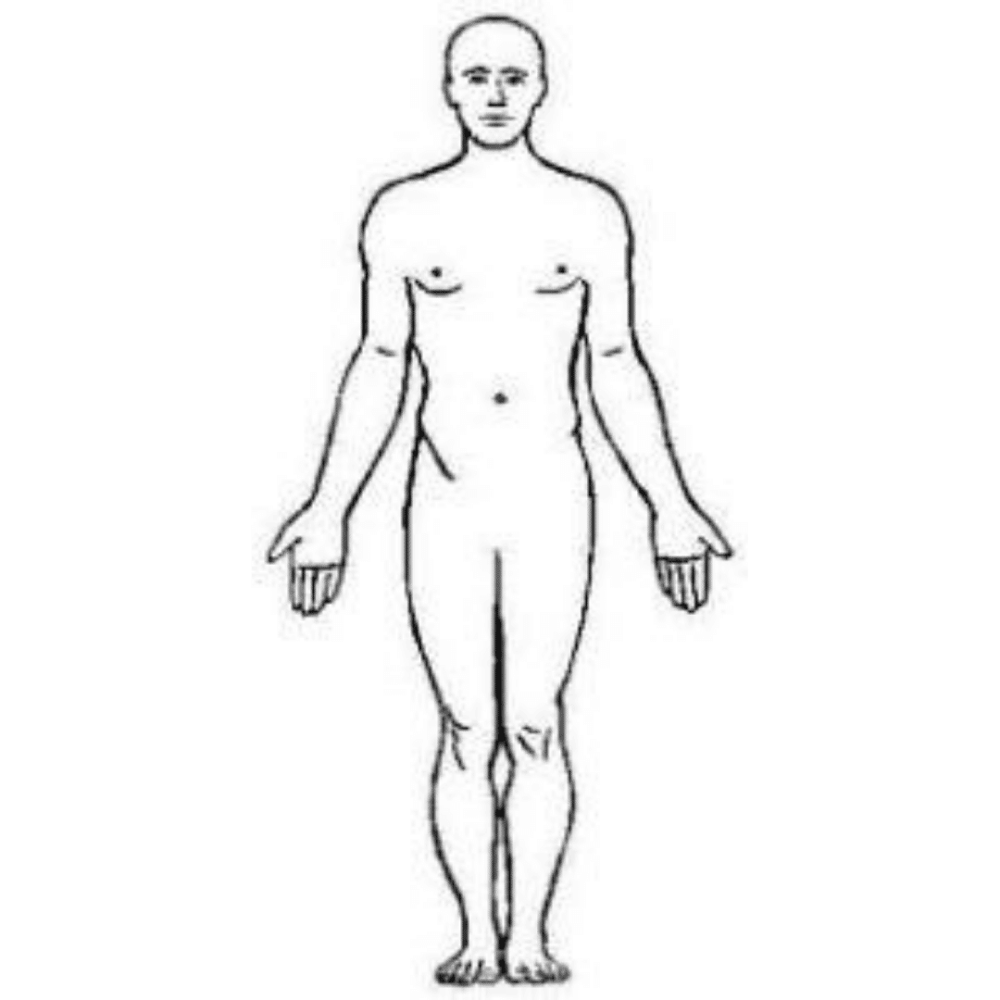
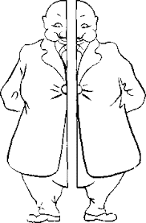
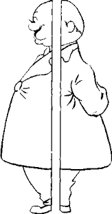
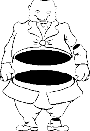
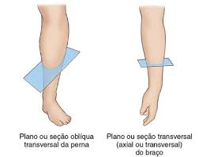

O corpo humano divide-se em: cabeça, pescoço, tronco e membros.
A cabeça corresponde à extremidade superior do corpo estando unida ao tronco por uma porção estreitada, o pescoço.
O tronco compreende o tórax, abdome, pelve e sua região posterior, o dorso.
Dos membros, dois são superiores ou torácicos e dois inferiores ou pélvicos.
Na transição entre o braço e o antebraço há o cotovelo; entre o antebraço e a mão, o punho; entre a coxa e a perna, o joelho, e entre a perna e o pé, o tornozelo.
A região posterior do pescoço é denominada nuca e a do tronco, dorso.
As nádegas correspondem a região glútea.

Feito por Leonardo da Vinci por volta de 1490 baseando-se no conceito exposto na obra “Os dez livros da Arquitetura”, escrito pelo arquiteto romano Marcus Vitruvius Pollio.
O homem descrito por Vitruvius apresenta-se como um modelo ideal para o ser humano, cujas proporções são perfeitas, segundo o ideal clássico de beleza.

O desenho também é considerado como um símbolo da simetria básica do corpo humano e, para extensão, para o universo como um todo.
Esse desenho é usado até hoje por ilustradores para aprender a proporção humana, como se fosse um guia universal de ilustração.
No entanto para os dias atuais, as proporções e identificações no corpo humano são baseadas na posição anatômica.
Para evitar o uso de termos diferentes nas descrições anatômicas, considerando-se que a posição pode ser variável, optou-se por uma posição padrão, denominada posição anatômica.
Deste modo, os anatomistas, quando escrevem seus textos, referem-se ao objeto de descrição considerando o indivíduo na posição padronizada.
Indivíduo em posição ereta (em pé, posição ortostática ou bípede);
Com a face voltada para frente;
O olhar dirigido para o horizonte;
membros superiores estendidos, ao longo do tronco e com as palmas voltadas para frente;
membros inferiores unidos, com as pontas dos pés dirigidas para frente.
Não importa, portanto, que o cadáver esteja sobre a mesa em decúbito dorsal (com o dorso acolado à mesa), decúbito ventral (com o ventre acolado à mesa) ou decúbito lateral (de lado): as descrições anatômicas são sempre feitas considerando o indivíduo em posição anatômica.

Para os animais quadrúpedes, a posição anatômica refere-se ao animal na sua posição ordinária, com os quatro membros estendidos firmemente sobre o solo.
A) O plano que divide o corpo humano em metades direita e esquerda de tamanhos idênticos é denominado sagital mediano.
Quando divide o corpo humano em metades direita e esquerda de tamanhos diferentes é denominado sagital paramediano.
Toda secção do corpo feita por planos paralelos ao mediano é uma secção sagital (corte sagital) e os planos de secção são também chamados sagitais.

B) Os planos de secção que são paralelos aos planos ventral e dorsal são ditos frontais e a secção é também denominada frontal ou coronal (corte frontal ou coronal).
Como já foi assinalado, o plano ventral (ou anterior) é tangente à fronte do indivíduo, donde o adjetivo — frontal.

C) Os planos de secção que são paralelos aos planos cranial, podálico e caudal são horizontais.
A secção é denominada transversal / axial / horizontal (corte transversal ou axial ou ainda horizontal).
Os três termos podem ser usados.

D) Os cortes oblíquos são “fatias” do corpo ou de qualquer uma de suas partes que não são feitas ao longo de um dos planos anatômicos já mencionados.
É um plano longitudinal ou transverso, que está angulado ou inclinado (diagonal) e não paralelo aos planos sagital, coronal ou axial.
Na prática, muitas imagens radiológicas e cortes anatômicos não são feitos exatamente nos planos sagital, frontal ou transverso.
As vezes, são feitas em oblíquos.

{kind=link}
{kind=link}
{kind=link}
{kind=link}